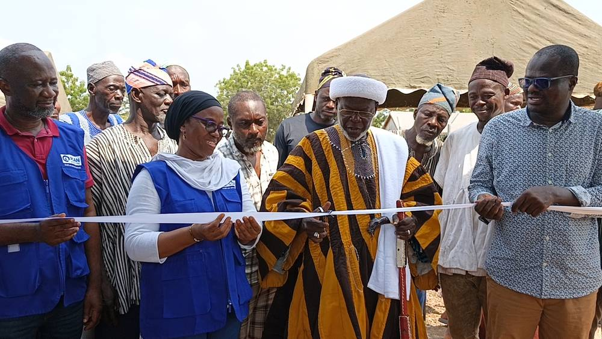

가나 북부 여성 창업가·농민 위한 태양광 허브 문 열어…60개 마을이 함께 쓴다

플랜인터내셔널 'WISE' 사업 결실…지역단체가 여성들 대신 운영·관리, 추장 "소중히 잘 써 달라"
가나 북부주 쿰붕구·톨론 지역 여성들이 함께 쓰는 태양광 허브가 보구 마을에 문을 열었다. 국제아동권리단체 플랜인터내셔널 가나는 여성 창업가와 농민을 위한 이 시설을 지역 여성들에게 넘겼으며, 쿰붕구·톨론 등 약 60개 마을 여성들이 혜택을 볼 것으로 예상된다.
허브는 태양광으로 전기를 쓰며 사업 상담, 시장 정보, 디지털 서비스, 기관 연결 등을 한곳에서 제공하는 공동체 공간이다. 이 시설은 2020년 1월부터 2025년 3월까지 5개 지역 150개 마을에서 진행된 여성 경제자립 사업 'WISE'의 하나로, 캐나다 정부 지원을 받아 플랜인터내셔널 캐나다와 현지 단체 WIDO·어바넷이 함께 추진했다. 사업 기간 여성·소녀 역량 지수는 11.2% 올랐고, 참여 가구가 빈곤선 아래에 있을 가능성은 10.5% 줄었다.
운영과 관리는 지역 단체 어바넷이 여성들을 대신해 맡는다. 하지아 무니라투 이시푸 플랜인터내셔널 가나 대표는 전통 지도자와 주민, 여성 창업가들이 시설을 '공동의 것'으로 여기고 함께 지켜 달라고 당부했다.
시민에너지 관점
농촌 마을에 들어선 태양광 시설 하나가 발전 설비를 넘어 60개 마을 여성들의 일터이자 정보 창구가 된다. 이 사업이 빈곤 가구 비율을 10.5% 낮췄다는 숫자는 에너지가 누구 손에 있느냐가 곧 소득 문제라는 점을 보여 준다. 다만 외부 단체가 짓고 넘겨준 시설은 운영 주체가 흔들리면 쉽게 멈추기 때문에, 이용자인 여성들이 직접 소유하고 결정하는 구조가 끝까지 갖춰져야 한다. 우리 햇빛소득마을도 설비를 세우는 데서 그치지 말고, 여성·고령 주민이 운영과 수익 결정에 참여하는 규칙부터 마을마다 정해야 한다.
출처: Citi Newsroom 2026-11-12 Shawana Yussif 원문 보기
ガーナ北部、女性起業家・農家のための太陽光ハブが開設…60の村が共同で利用
プラン・インターナショナルの「WISE」事業の成果…地元団体が女性に代わり運営・管理、首長「大切に使って」
ガーナ北部州クンブング・トロン地域の女性たちが共同で使う太陽光ハブがヴォグ村に開設された。国際NGOプラン・インターナショナル・ガーナは、女性起業家と農家のためのこの施設を地域の女性たちに引き渡し、クンブング・トロンなど約60の村の女性が恩恵を受ける見込みだ。
ハブは太陽光で電気をまかない、事業相談、市場情報、デジタルサービス、関係機関への紹介などを一か所で提供する共同体の空間だ。この施設は2020年1月から2025年3月まで5地域150の村で進められた女性の経済的自立事業「WISE」の一環で、カナダ政府の支援を受け、プラン・インターナショナル・カナダと現地団体WIDO・アーバネットが共同で推進した。事業期間中、女性・少女のエンパワーメント指数は11.2％上昇し、参加世帯が貧困線以下にある可能性は10.5％低下した。
運営と管理は地元団体アーバネットが女性たちに代わって担う。プラン・インターナショナル・ガーナのハジア・ムニラトゥ・イシフ代表は、伝統的指導者や住民、女性起業家が施設を「共有のもの」と考え、ともに守ってほしいと呼びかけた。
市民エネルギーの視点
農村に建った太陽光施設一つが、発電設備を超えて60の村の女性たちの仕事場と情報の窓口になる。この事業が貧困世帯の割合を10.5％下げたという数字は、エネルギーが誰の手にあるかがそのまま所得の問題であることを示している。ただし外部団体が建てて引き渡した施設は、運営主体が揺らぐと簡単に止まってしまうため、利用者である女性たちが直接所有し決定する仕組みが最後まで整っていなければならない。韓国の「日差し所得村」も設備を建てるだけで終わらせず、女性や高齢の住民が運営と収益の決定に参加するルールから村ごとに定めるべきだ。
出典: Citi Newsroom 2026-11-12 Shawana Yussif 原文を読む
加纳北部为女性创业者和农民建成太阳能中心…60个村庄共同使用
国际计划组织“WISE”项目成果…当地团体代女性运营管理，酋长：“请好好珍惜使用”
加纳北部省昆本古和托隆地区女性共同使用的太阳能中心在沃古村落成。国际计划组织（Plan International）加纳分部把这处为女性创业者和农民建设的设施移交给当地女性，预计昆本古、托隆等约60个村庄的女性将从中受益。
该中心以太阳能供电，在同一地点提供创业咨询、市场信息、数字服务和机构转介等服务，是一处社区空间。它是2020年1月至2025年3月在5个地区150个村庄实施的女性经济自立项目“WISE”的一部分，由加拿大政府资助，国际计划组织加拿大分部与当地团体WIDO、Urbanet共同推进。项目期间，女性与女童赋权指数上升11.2%，参与家庭生活在贫困线以下的可能性下降10.5%。
中心的运营和管理由当地团体Urbanet代表女性负责。国际计划组织加纳国家主任哈吉娅·穆尼拉图·伊西富呼吁传统领袖、居民和女性创业者把这处设施视为“共同的财产”，一起守护。
市民能源视角
农村里建起的一处太阳能设施，不只是发电设备，更成为60个村庄女性的工作场所和信息窗口。该项目让贫困家庭比例下降10.5%，这一数字说明能源掌握在谁手中，直接关系到收入。不过，外部团体建好后移交的设施，一旦运营主体不稳定就容易停摆，因此必须建立让使用者——女性——直接拥有和决策的结构。韩国的“阳光收入村”也不应止于建设设备，而应在每个村先定下让女性和老年居民参与运营与收益决策的规则。
来源: Citi Newsroom 2026-11-12 Shawana Yussif 查看原文
Solar hub for women entrepreneurs and farmers opens in northern Ghana, serving about 60 communities
Outcome of Plan International's WISE project; local group to run it on women's behalf as chief urges residents to 'cherish it'
A solar hub shared by women in the Kumbungu and Tolon districts of Ghana's Northern Region has opened in Voggu. Plan International Ghana handed the facility, built for women entrepreneurs and farmers, over to local women, and women from about 60 communities in Kumbungu, Tolon and nearby districts are expected to benefit.
The solar-powered hub is a community space offering business development services, market information, digital platforms and referral support in one place. It is part of the WISE women's economic empowerment project, run from January 2020 to March 2025 in 150 communities across five districts with funding from the Canadian government, implemented by Plan International Canada with local partners WIDO and Urbanet. Over the project, a women and girls empowerment index rose 11.2%, while the likelihood of participating households living below the poverty line fell 10.5%.
Urbanet will manage and maintain the facility on the women's behalf. Plan International Ghana country director Hajia Muniratu Issifu urged traditional leaders, residents and women entrepreneurs to take collective ownership of the hub and keep it open to all.
Citizen Energy View
One solar-powered facility in a rural village becomes more than a power source: it is a workplace and information point for women across 60 communities. A 10.5% drop in the likelihood of poverty shows that who holds the energy is a question of income. Yet facilities built by outside groups and then handed over can easily stall if the operator falters, so structures that let the women who use them own and decide must be secured for the long run. Korea's sunshine income villages, too, should not stop at installing panels but should set rules in every village that give women and older residents a say in operations and earnings.
Source: Citi Newsroom 2026-11-12 Shawana Yussif Read the original